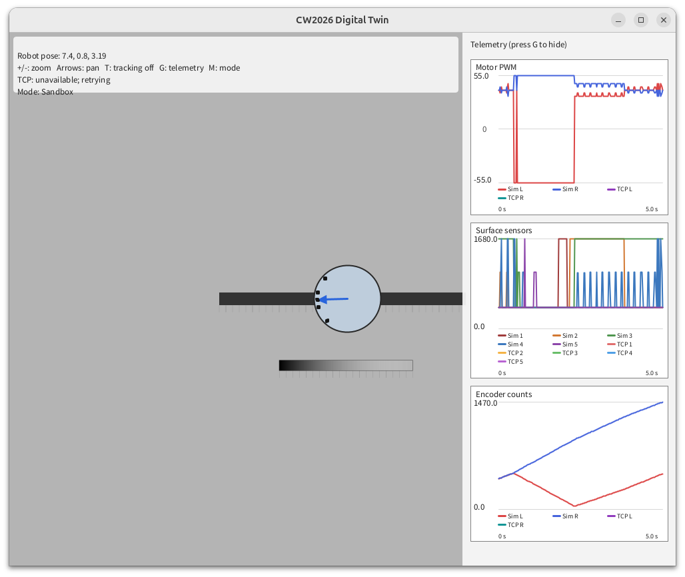

01
Simulation environment · visual model
10–20 minInstall and Configure Processing IDE
Processing runs the supplied Digital Twin on your computer. Processing is a very convenient tool to generate graphical outputs that requires minimal setup and configuration. The provided Processing code has been written to provide:
- A simple simulation model of the robot. This simulation can be used independently of the StampC3.
- To connect to the StampC3 (your robot) over WiFi. When connected, to visualise the data sent back from your robot
- To run the same controller code on both the StampC3 and the simulated robot. This will allow you to compare and investigate differences between the real robot and simulation.
Setup checklist
- Install Processing 4.
- Open the Processing application.
- Select File → Open, then navigate to the DigitalTwin directory, then select DigitalTwin.pde. The DigitalTwin directory should have been included in the download or repository provided to you as the StampC3_Template code.
- Click the Play icon to run the simulation. You should see a visualisation of a robot following a line.
- Pressing the 'g' key will toggle the visibility of the plots.
- Pressing the 't' key will toggle between following the robot or not.
- Pressing the '-' or '+' key will decrease or increase the zoom respectively.
- More guidance on the Digital Twin simulation is provided in the exercises for Phase 2 of this course

Check Processing opensIdentify Run and consoleKeep launch errors